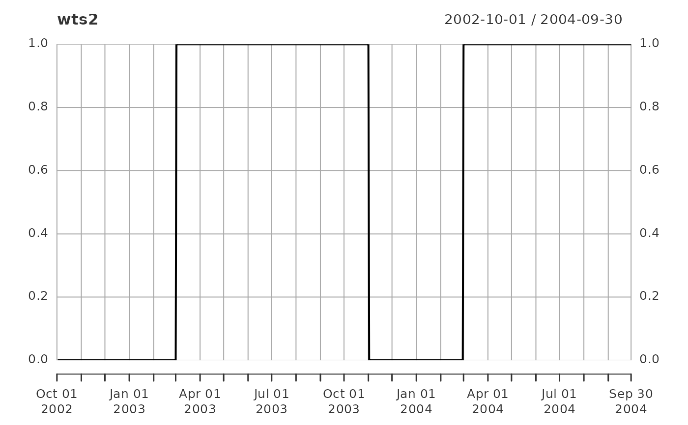

R/rvn_gen_obsweights.R
rvn_gen_obsweights.RdCreates an observation data weights time series based upon dates stored in an xts time series and criterion given by the user
rvn_gen_obsweights(
ts,
criterion = "BETWEEN",
startdate = "1785-10-05",
enddate = "2500-01-01"
)xts time series
criterion used to determine weighted vs. non-weighted dates one of 'BEFORE', 'AFTER', 'BETWEEN', 'BETWEEN_CYCLIC'
Date indicating start of time period (for 'BETWEEN' or 'AFTER' criterion) or start of annual cyclic period (for 'BETWEEN_CYCLIC'). In the latter case, only the julian day of the startdate matters.
Date indicating end of time period (for 'BETWEEN' or 'BEFORE' criterion) or end of annual cyclic period (for 'BETWEEN_CYCLIC'). In the latter case, only the julian day of the enddate matters.
wtsreturns numeric vector of weights
for criterion ='BEFORE', all timestamps prior to the enddate have a
weight of 1, 0 otherwise
for criterion ='AFTER', all timestamps after the startdate have a
weight of 1, 0 otherwise
for criterion ='BETWEEN', all timestamps after the startdate and before
the enddate have a weight of 1, 0 otherwise
for criterion ='BETWEEN_CYCLIC', all julian days after the startdate and before
the enddate have a weight of 1, 0 otherwise; if startdate is more than enddate,
then the opposite is true, e.g, for startdate="2002-11-01" and enddate "2002-01-31",
only November, December and January timestamps have a weight of 1
rvn_rvt_write to write the weights to an rvt file
# locate hydrograph sample csv data from RavenR package
ff <- system.file("extdata","run1_Hydrographs.csv", package="RavenR")
# read in Raven Hydrographs file, store into mydata
mydata <- rvn_hyd_read(ff, tzone="EST")
# generate rvt file using just observations from Subbasin ID 36
flows <- rvn_ts_infill(mydata$hyd$Sub36_obs)
# weight March-October flows:
wts <- rvn_gen_obsweights(flows,criterion = "BETWEEN_CYCLIC",
startdate="2000-03-01", enddate="2003-11-01")
# and only after March 2003:
wts2 <- rvn_gen_obsweights(flows,criterion = "AFTER",
startdate="2003-03-01")
wts2 <- wts2*wts # product merges weights
# show weights over time
plot(wts2)
